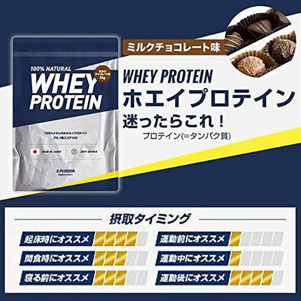

プロテインとは

プロテインは日本語で「たんぱく質」という意味でして、その名前の通り、たんぱく質を補給できる栄養補助食品です。また、プロテインを１回摂取することにより、約20gのたんぱく質を摂取できます。（メーカーによって１度で摂取できる量には若干差がありますが、大体２０g摂取できると思ってもらって大丈夫です。）しかし、「20g摂取できるからってなんなの？」と思った方が多いと思います。だけど、これって実は凄いことなのです。。
何が凄いのかは「なぜプロテインを飲むのか」をぜひご覧ください!^^
ープロテインの種類ーホエイプロテインがおすすめです
プロテインには作られる原料によって「ホエイプロテイン」「カゼインプロテイン」「ソイプロテイン」の３種類に分かれていますので、順番に説明いたしますね。
ホエイプロテイン
-
ホエイプロテインは牛乳から作られるたんぱく質で、ホエイとは日本語で「乳清（にゅうせい）」を意味します。私は初めてそれを聞いたとき「乳清とはなんぞや？」と思いましたが、実は多くの人はそれを目にしたことがあるはずです。
冷蔵庫にヨーグルトを保管していると、中を見た時に透明で若干黄色味がかった液体が浮いていた、という経験はないでしょうか。その液体こそがホエイなのです。
ホエイプロテインには「水溶性・消化吸収が早い・メジャーである」といった特徴があります。中でも、メジャーであるというのはとても重要です。後述する他２つのプロテインに比べて製品の種類が圧倒的に豊富なので、自分にあった味・量・値段のものが見つかるからです。 カゼインプロテイン
-
カゼインプロテインは前述のものと同じく牛乳から作られるたんぱく質で、カゼインはチーズの原料としても知られていて、「消化吸収がゆるやか」という特徴を持っています。ホエイプロテインに比べると消化吸収が遅いとも言えますが、胃の中で時間をかけて消化されていくため、腹持ちの良さ・満腹感の継続に期待できるので、ダイエット中や就寝前などに飲むと効果的です。
ソイプロテイン
-
ソイプロテインは、前述の２つとは異なり、大豆から作られています。また、「消化吸収がゆるやか」と、カゼインと同様の特徴を持っています。原料による味の違いはあるもののカゼインプロテインとソイプロテインには大きな差はないため、「牛乳と豆乳、どちらが飲みたいか」くらいの気持ちで選択するのがいいでしょう。
ーなぜプロテインを飲むのかー
「プロテインについてはわかったけど、それをなぜ飲まなきゃいけないの」って思う方もいらっしゃると思います。実際、みんながみんな飲む必要はありません。飲む必要がある人もいるということなのです。ですので、以下ではどんな人が飲むべきなのかを簡単に説明しようと思います。
たんぱく質は不足しがち
あなたは一日の摂取目標となるたんぱく質量をご存じでしょうか。厚生労働省の発表した「日本人の食事摂取基準（２０２０年度版）」によると、以下の図の通りです。
身体活動レベルについて- （Ⅰ）生活の大部分が座位で、静的な活動が中心の場合
- （Ⅱ）座位中心の仕事だが、職場内での移動や立位での作業・接客等、あるいは通勤・買物・家事、軽いスポーツ等のいずれかを含む場合
- （Ⅲ）移動や立位の多い仕事への従事者。あるいは、スポーツなど余暇における活発な運動習慣をもっている場合
例として私の場合ですが、
１８～２９歳/身体活動レベル（Ⅱ）になるので、目標量は８６～１３３gとなります。
しかし、数字で言われてもなかなかピンとこないですよね。。なので、１日の食事例をご紹介いたします。
- 朝食
- 納豆（１パック）・お味噌汁・ごはん（お茶碗１杯）
摂取たんぱく質量＝約７g - 昼食
- 牛丼（大盛り） ※すき家の牛丼大盛りと仮定します。
摂取たんぱく質量＝約３０g - 夕食
- オムライス ※卵２個・具材はたまねぎとウインナーと仮定します。
摂取たんぱく質量＝約１６g
合計たんぱく質摂取量＝５５g
割と普通な食生活のはずですが、目標量にはあと３１g届いていません。
このように目標摂取量をクリアするには思っているよりも摂取する必要があるのですが、
プロテインはそれを補ってくれるのです。
手軽にたんぱく質を摂取できる
前述のように、１日の目標量となるたんぱく質を摂取するのは簡単ではないのです。しかし、プロテインは１杯飲むだけで約２０g（１杯当たりの標準摂取量）も簡単に摂取できるのです。
また、たんぱく質２０gを食材で摂取する例としては以下が挙げられます。
- ゆで卵３個
- サラダチキン１つ
- 納豆４パック分
ダイエットの味方
プロテインはたんぱく質を補給してくれる栄養補助食品であると同時にダイエット戦士たちの味方でもあります。
プロテインには基本的にたんぱく質とごく少量の糖質・脂質、さらにビタミン群が含まれていて、
簡単に言うと太る要素がありません。
ですので、ダイエット時の間食やどうしてもおなかが減った際などにきっとあなたを助けてくれるでしょう。
ー選ぶ際の注意点ー継続して飲むことが大切です
プロテインは毎日継続して飲むことにより、体に十分な量のたんぱく質を補給し、私たちの健康を支えてくれます。そこで、プロテインを継続して飲むために心がけることを紹介します。
コスパを意識しよう
プロテインは町のコンビニやスーパー、ネット通販など色々な場所で販売されていて、紙パックに入ったジュースタイプのものはよく目に入ると思います。
しかし本サイトでは、プロテインを買う場合はプロテインが粉末タイプの大容量パックを購入することをお勧めします。一食当たりのコスパが、前述のものに比べて高いからです。例えば、スーパー等で卵パックを購入するときは２個パック等のよりも１０個パックのものを買いますよね。なぜですか？安いからですよね。プロテインもそれと同じなのです。
- 参考価格
- 明治 ザバス ミルクプロテイン 脂肪0 ２００ml
- 一食当たり１４２円（税抜き）
- 明治 ザバス ホエイプロテイン100 ココア味【50食分】
- 一食当たり１１１円（税抜き）
- ※明治ザバス公式サイトのメーカー希望小売価格を参照しています。
また、プロテインを購入するときは、AmazonやRakutenといったネット通販サイトを利用しましょう。価格が、小売店と比べて、安くなっているからです。
※明治 ザバス ホエイプロテイン100 ココア味【50食分】の場合は、メーカー希望小売価格が５５５０円に比べて、Amazonでは３９０８円 (７８円 / １食あたり) とかなり安くなっています。（２０２１年７月２３日現在）
ダマ・泡には気をつけよう
プロテインを自分で作る場合は、シェイカーに水と粉末のプロテインを入れてシェイクして飲むのですが、プロテインの味（フレーバー）によっては泡立つもの・ダマができやすいものがあり、これらによってプロテインの飲みやすさが変わってきます。
この泡立ちやダマの発生が嫌な場合、私がこれまでプロテインを飲んできた経験から言うと、おすすめの味はチョコ・ココア味です。他のフレーバーのものに比べ泡立ち・ダマができにくく、味が味なのでとてもおいしいのです。
なので、味に迷ったらまずはチョコ・ココア味を選ぶことをおすすめします。
味変をし、プロテインを楽しもう
おいしいプロテインとはいえ、同じものをずっと飲み続けるといつしか飽きがきてしまい、飲むこと自体が作業となってしまうのを防ぐために、味変をしましょう。大きく分けて味変には「フレーバーを変える」「水以外を入れてみる」の２つがあります。
プロテインには多くのフレーバーがあります。チョコ・バニラ・バナナ、中にはブルーベリーチーズケーキ味なんてのもあります。イギリスのプロテイン販売業者であるマイプロテイン社が販売している「Impact ホエイプロテイン」にはなんと６０種類以上のフレーバーがあるのです。こんなにフレーバーがあったらプロテインを飲むのは楽しいですよね。
次に、水以外を入れてみるについてです。本サイトではプロテインとは水に溶かして飲むものみたいに言ってきましたが、水で飲まなきゃいけないなんてルールはありません。自分が入れたいものを入れればいいのです。
私の場合は、チョコ味のプロテインを水とブラックコーヒーで割って溶かし、カフェオレチックに飲んでいたりしますよ^^。他には、牛乳で割って飲んでみるなんてのもいいかもしれませんね。
私のおすすめプロテイン
次に、私が普段購入しているプロテインをご紹介いたします。とても気に入っています^^。エクスプロージョン ホエイプロテイン ミルクチョコ味

私のおすすめするプロテインはエクスプロージョン社から販売されている、「ホエイプロテイン ミルクチョコ味」です。味良し・飲みやすさ良し・コスパ良しなプロテインです。
このプロテインは、３kg入りのものを購入した場合、なんと１食あたり５７円とめちゃ安いです。（２０２１年７月２３日現在のホームページの価格）エクスプロージョン社は「若い人にも毎日飲み続けてほしいから、高品質なプロテインを手頃な価格で提供」を目指し、かなりリーズナブルな価格となっているのです。
また、ミルクチョコ味は泡立ち・ダマがかなり少なくとても飲みやすいので、チョコやココアが好きな人にも味に迷っている人にもとてもおすすめです。
おわりに
いかがだったでしょうか。本サイトを見たことによって少しでもプロテインに興味を持っていただけたら幸いです。みなさまのより良い健康とプロテインライフを祈っております。